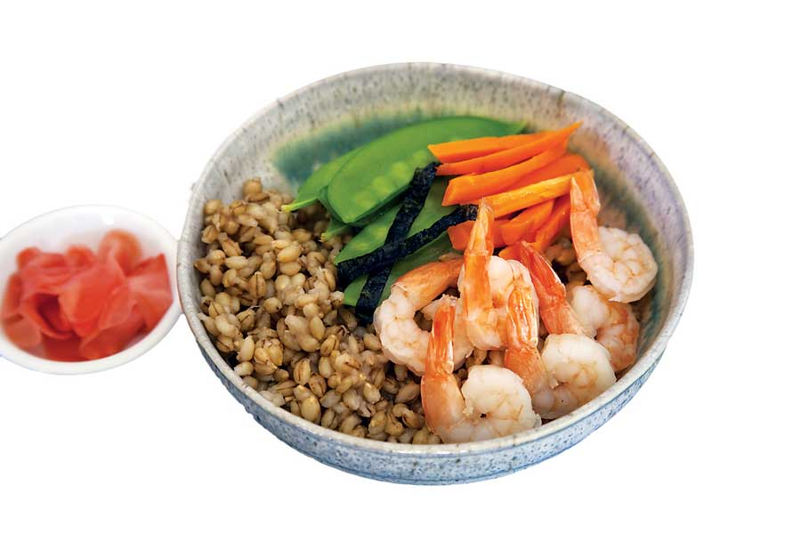

Barley seems like the perfect antidote to many of the things that ail us. Try this recipe for Japanese Barley Bowl to bring this nutritious grain into your kitchen, and see Sweet and Savory Barley Recipes for barley nutritional information and more great barley recipes.
JAPANESE BARLEY BOWL
Ingredients:
1 1/2 cups hulled barley, rinsed
3 to 4 cups water
1/2 tsp salt
2 tbsp rice vinegar
2 tsp sugar or other sweetener
8 ounces snow peas, steamed
1 medium carrot, peeled and julienned
12 ounces cooked shrimp, peeled and deveined
4 sheets nori seaweed, sliced
1/2 cup pickled ginger slices
2 tbsp prepared wasabi
Shoyu soy sauce
Instructions:
Bring barley, water and salt to boil in a medium saucepan. Cover and cook for 40 to 50 minutes. When the grain is tender, drain any excess water, return to the pan, let stand covered for 10 minutes, then scrape out into a large low bowl. Cover with a wet kitchen towel to keep it moist as it cools.
Mix vinegar and sugar, and fold into barley. Drop vegetables in boiling water until crisp-tender, and remove to cool.
To serve, divide barley between four wide bowls and flatten evenly. Artfully arrange the vegetables and seafood on top, and place a cluster of pickled ginger slices on one side. Sliver nori with scissors or a knife and sprinkle over the bowls. Serve with wasabi, ginger and shoyu on the side. Serves 4.
Chocolate Barley Bundt Cake Recipe
Greek Barley Salad Recipe
Turkey and Barley Meatloaf with Sage Recipe
|
 EMILY HELLER Serve this healthy bowl with wasabi, ginger and shoyu soy sauce on the side. |
|
|